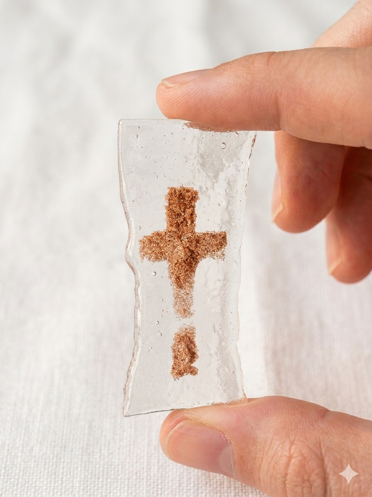
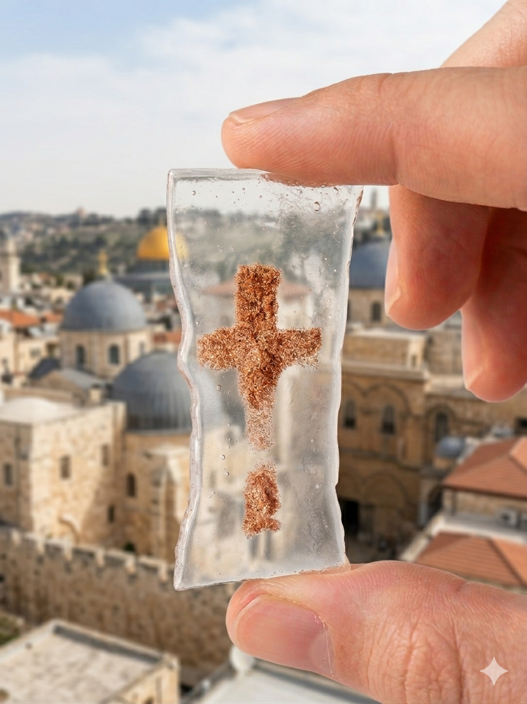
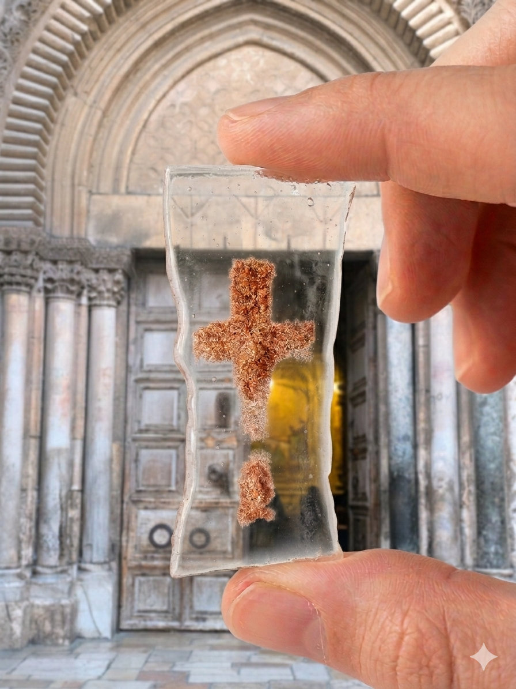
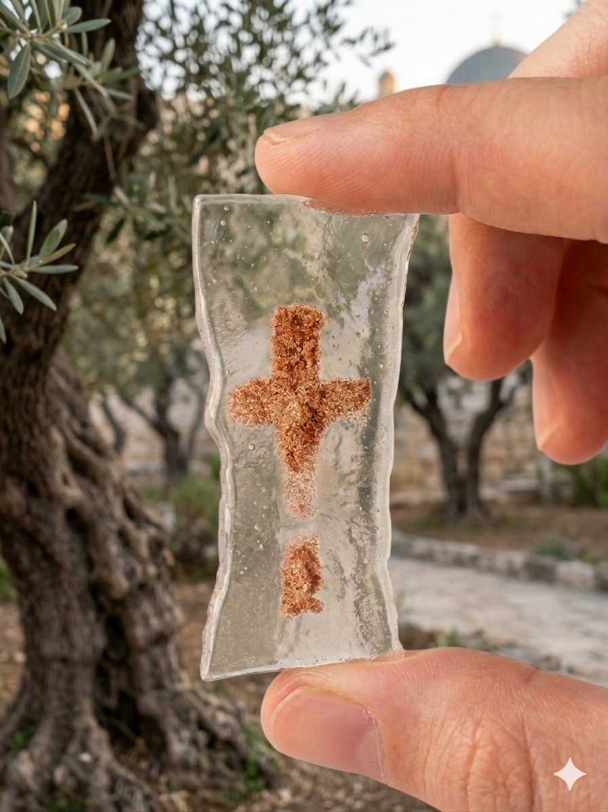

Handcrafted glass with a touch of Jerusalem soil • A piece of Holy Land in your hands.

A unique wearable relic. Authentic Holy Land soil in the shape of a cross, symbolizing Christ's suffering for his faith and for our salvation permanently sealed within double-layered fused glass. Each piece is crafted using specialized kiln techniques to ensure a timeless finish.
Dimensions: 25 x 55 mm (Golden Ratio Design)
Our pendants are created through a precise fusing process at high temperatures. We use high-clarity glass to showcase the raw texture of the earth inside. No two pendants are identical.
The piece of Holy Land was collected in the Garden of Gethsemane in Jerusalem, the place where Jesus Christ suffered and was arrested before the crucifixion. This piece of Holy Land was carried along the Passion of Christ from the place of his arrest in the Garden of Gethsemane, through the gates of St. Stephen along the Via Dolorosa with 14 stops, including the place of the crucifixion of Jesus Christ on Golgotha and his placement in the tomb. It was consecrated in the Church of the Holy Sepulchre on the Stone of the Anointing of Jesus Christ in Jerusalem. And carried to the place of the ascension of Jesus Christ on the Mount of Olives.


